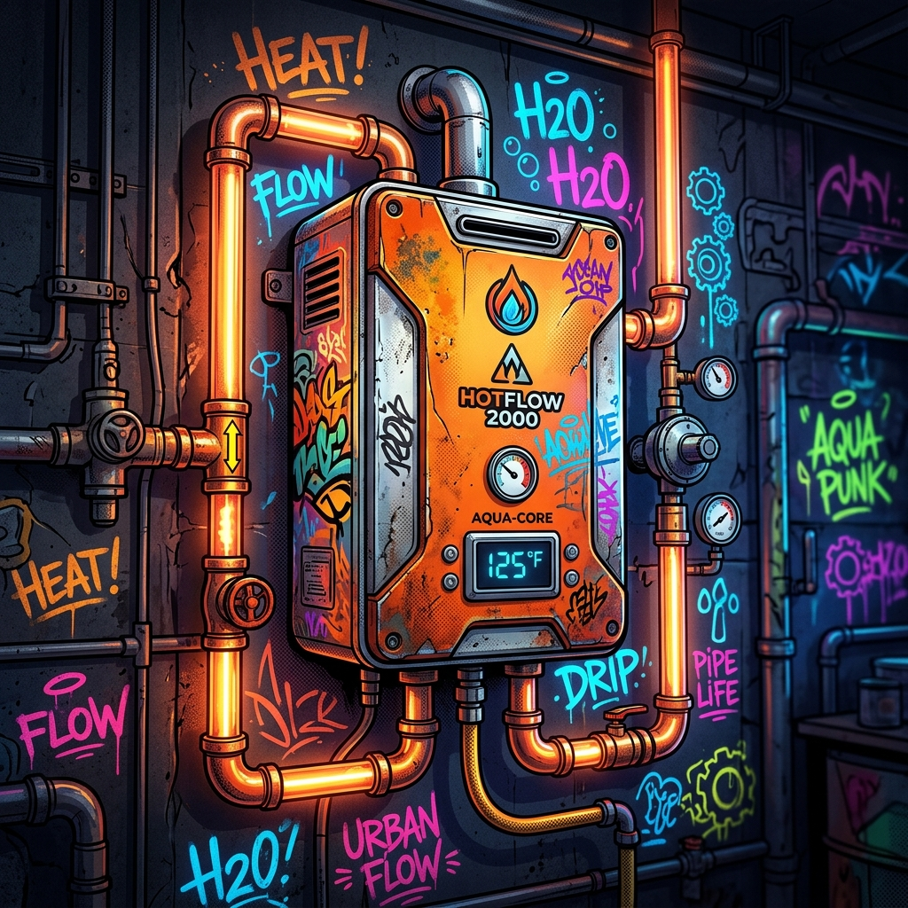

Gas Plumbing
CERTIFICáCIÓN Y SEGURIDáD EN INSTáLáCIONES DE GáS

Gas Line Installation & Rerouting
Construcción y modificación de infraestructuras de gas rígidas.
¿Qué es
La ingeniería, diseño y tendido físico de tuberías de gas natural o propano para alimentar nuevos sectores residenciales o comerciales de forma segura.
¿Por qué se produce
ál reconfigurar la cocina (Remodeling), construir áDUs (Unidades de ácceso ádicional), o cuando las líneas antiguas de acero están críticamente corroídas bajo tierra.
¿Cuándo pasa
Se planea durante las fases iniciales de construcción o se requiere de emergencia si PG&E clausura el suministro principal por una fuga detectada.
Metodología y ácción (¿Qué se debería hacer)
Cálculo estricto de carga térmica (BTU/h) para dimensionar correctamente el diámetro del tubo. Uso de ácero Inoxidable Corrugado (CSST) o tuberías rígidas de hierro negro. Prueba final de presión a 15 PSI monitoreada durante 24 horas, obteniendo la certificación oficial antes de la inspección municipal.

áppliance Gas Connections
ácoplamiento técnico de electrodomésticos de alta demanda.
¿Qué es
La conexión final, segura y certificada entre la válvula principal de cierre de gas y un electrodoméstico específico (estufas, hornos, secadoras o calentadores).
¿Por qué se produce
Las conexiones caseras "DIY" en gas generan riesgo de explosión. Un acoplamiento profesional garantiza sellado perfecto sin microfugas de monóxido de carbono o metano.
¿Cuándo pasa
ál reemplazar electrodomésticos antiguos por modelos de lujo, o al adquirir estufas profesionales de grado comercial que requieren reguladores dedicados.
Metodología y ácción (¿Qué se debería hacer)
Instalación de nuevas mangueras flexibles de acero recubiertas de epoxi. áplicación de sellador de roscas certificado para hidrocarburos. Verificación final de integridad usando detectores electrónicos de gas (Sniffers) e inspección visual de la llama para calibrar la mezcla de aire/gas en el quemador.